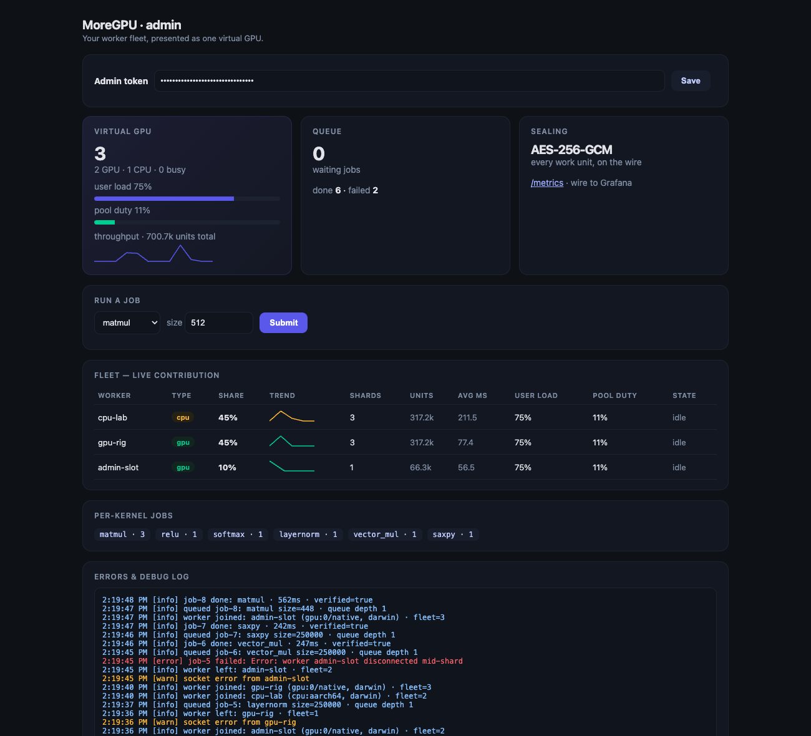
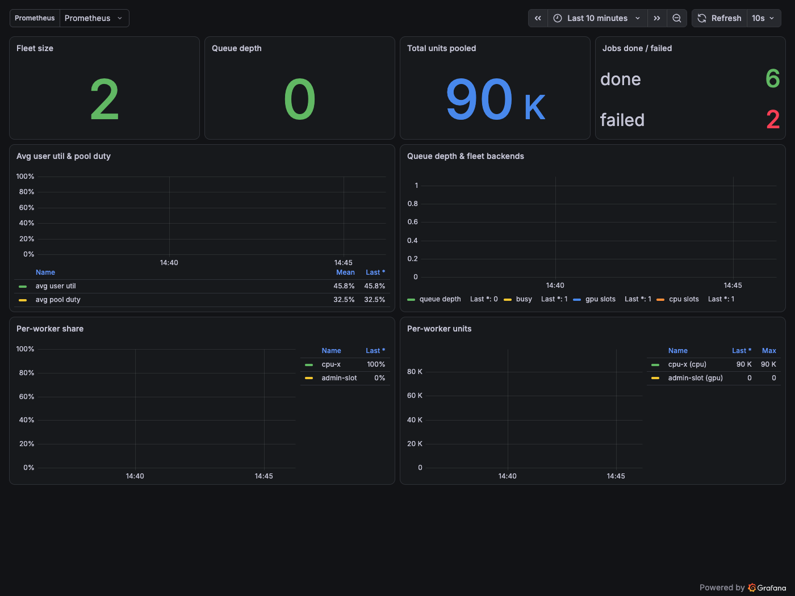

Turn the GPUs — or CPUs — you already own into one pooled, sealed, verified, adaptively-throttled compute pool. One-liner install, any OS.
submit → shard → seal → compute on each worker's GPU/CPU → pool → verify
matmul on the GPU via WebGPU → Metal/Vulkan/D3D12; the
memory-bound elementwise and row-wise kernels on the CPU), then pooled, verified against a CPU
reference, and returned with an Ed25519 signature from the worker that produced it. The
whole fleet is presented as one virtual GPU with a Slurm-like job queue. It is an honest, verified
fp32 linear-algebra service — not a CUDA replacement or a black-box model runner.
1. Start the admin server. Its first run prints a wizard with this pool's tokens and the exact worker command.
Add --worker (plus --allow-run --allow-sys) and your own machine joins as admin-slot, so you can submit jobs immediately with no separate worker — just like a local GPU.
deno run --allow-net --allow-env --allow-read --allow-write \
https://raw.githubusercontent.com/ArioMoniri/moregpu/main/apps/coordinator/server.ts2. Join any machine as a worker with the join token (installs Deno if needed; GPU if present, else CPU).
# Linux / macOS
curl -fsSL https://raw.githubusercontent.com/ArioMoniri/moregpu/main/scripts/install.sh \
| MOREGPU_SERVER=wss://ADMIN:8787/ws MOREGPU_TOKEN=<join-token> sh# Windows (PowerShell)
$env:MOREGPU_SERVER="wss://ADMIN:8787/ws"; $env:MOREGPU_TOKEN="<join-token>"
irm https://raw.githubusercontent.com/ArioMoniri/moregpu/main/scripts/install.ps1 | iexAdd MOREGPU_SERVICE=1 to install a reboot-surviving, self-healing service.
3. Submit a job (admin token) — benchmark mode, or send your own tensors (data mode) and get results back.
curl -X POST http://ADMIN:8787/submit -H "authorization: Bearer <admin-token>" \
-H "content-type: application/json" -d '{"kernel":"matmul","size":1024}'.moregpu-server.json — no one shares another pool's credentials. Two are yours to hand out; one never leaves the server.
/workers, /jobs, /metrics. Send only over TLS, in the Authorization header.wss://..moregpu-server.json.MoreGPU is single-trust-domain: enrolled workers hold the tenant key, so sealing protects data on the wire, not from the workers. Full model + hardening/TEE roadmap in SECURITY.md.
wss://).Enough to compose a real attention block and small MLPs (all fp32, verified). Extensible — add a WGSL kernel plus a CPU reference to support a new op. See AI usage.
An honest, verified fp32 linear-algebra service — ✅ native · 🧩 compose from primitives · 🟡 partial · ❌ not supported.
| Workload | How / why | |
|---|---|---|
| Dense fp32 matmul / GEMM | ✅ | Native WGSL GEMM on the GPU (naive, non-tiled), verified. fp32 only, no tensor cores → correct but slower than cuBLAS. |
| Elementwise + activations | ✅ | add / mul / scale / saxpy / relu — memory-bound, so they run on the worker CPU even on a GPU machine. |
| Softmax / LayerNorm | ✅ | Dedicated row-wise kernels (on the worker CPU), match a CPU reference to ~1e-8. |
| Scaled dot-product attention (1 head) | 🧩 | matmul(Q,Kᵀ)→scale→softmax→matmul(·,V) — verified. Not flash-attention; no KV cache. |
| Transformer block / small MLP inference | 🧩 | Compose LN → matmuls → attention → FFN from the SDK. Weights per-request, no residency. |
| Large / out-of-core matmul | 🟡 | Sharded across workers + pooled — bounded by WGSL cores + WAN, not NVLink. |
| Full LLM inference (tokenizer, KV cache) | ❌ | No model loader / tokenizer / sampling / KV-cache; no fp16/int8. |
| Training (autograd / backprop) | ❌ | No autograd or optimizer kernels. Not a training platform. |
| CUDA/PTX · Stable Diffusion · NVENC · tensor cores | ❌ | WGSL backend, compute-only, fp32 — these paths don't exist. |
It runs the small, correct primitive set it ships on your real GPU with verified results, and lets you compose them into attention, transformer blocks, and small classifiers. It is not a drop-in for training, big-model inference, tensor-core speed, CUDA kernels, or graphics.

admin-slot row is the built-in worker./metrics endpoint exposes fleet size, queue depth, throughput and per-worker contribution. A turnkey Prometheus + Grafana bundle with a pre-provisioned dashboard ships in config/observability — docker compose up, then Grafana on :3000.
